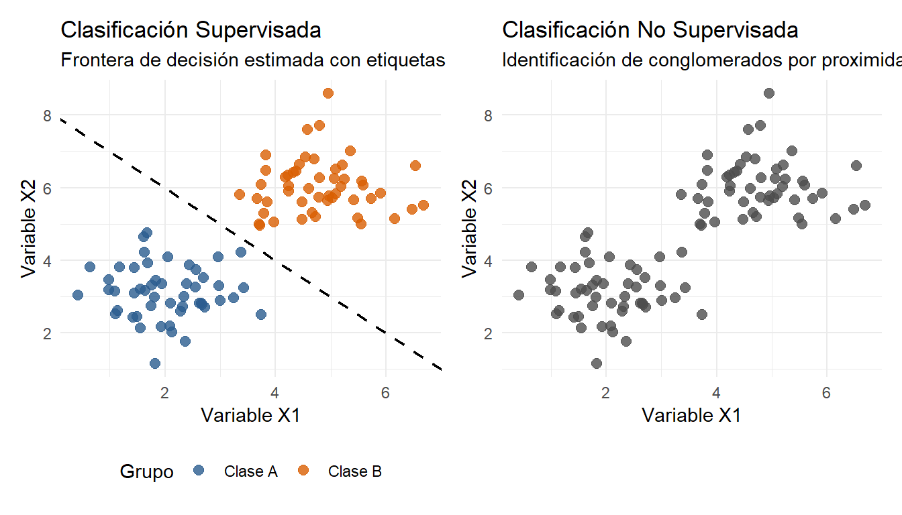

Capítulo 7 Métodos de clasificación
En el ámbito del análisis de datos multivariados, la clasificación comprende el conjunto de técnicas estadísticas y algorítmicas diseñadas para categorizar unidades observacionales (individuos, clientes, especies, muestras biológicas, transacciones) en grupos o clases homogéneas basándose en un conjunto de variables explicativas \(X = (X_1, X_2, \dots, X_p)^T\).
A medida que la dimensión del espacio de características \(p\) aumenta, la inspección gráfica simple resulta insuficiente. Los métodos de clasificación multivariada proveen un marco analítico riguroso para reducir la complejidad dimensional y extraer patrones organizativos de los datos.
El objetivo central de los métodos de clasificación es establecer una función de mapeo \(g: \mathcal{X} \rightarrow \mathcal{G}\), donde \(\mathcal{X} \subseteq \mathbb{R}^p\) representa el espacio multivariado de características y \(\mathcal{G} = \{g_1, g_2, \dots, g_K\}\) denota el conjunto de categorías o clases posibles.
La distinción conceptual primaria entre las técnicas de clasificación multivariada radica en la presencia o ausencia de una variable respuesta categórica (etiqueta o clase) previa al análisis.
| Criterio de Comparación | Clasificación Supervisada (Discriminante) | Clasificación No Supervisada (Conglomerados) |
|---|---|---|
| Variable Respuesta (\(Y\)) | Conocida a priori (Etiquetada). | Ausente / Desconocida (No etiquetada). |
| Objetivo Principal | Entrenar reglas de decisión para clasificar nuevas observaciones o explicar qué variables diferencian a los grupos. | Descubrir agrupaciones naturales o patrones ocultos de similitud entre observaciones. |
| Técnicas Representativas | LDA, QDA, Regresión Logística, \(k\)-NN, Árboles CART. | Conglomerados Jerárquicos, K-Means, DBSCAN, GMM. |
| Evaluación del Modelo | Matriz de confusión, Sensibilidad, Especificidad, Curvas ROC / AUC. | Coeficiente de Silueta, Criterio del Codo (Elbow Method), Índice de Rand. |
Ejemplo 1: Enfoque Supervisado (iris)
En el conjunto de datos iris, la variable Species actúa como etiqueta supervisada. El objetivo consiste en construir un modelo que aprenda la relación entre las medidas morfométricas y las especies definidas.
Ejemplo 2: Enfoque No Supervisado (iris)
Si prescindimos de la columna Species, el problema se convierte en un análisis no supervisado. El algoritmo debe agrupar las 150 flores basándose únicamente en la proximidad geométrica en un espacio de cuatro dimensiones.
7.1 Visualización Intuitiva de Ambos Paradojas
Para ilustrar la diferencia fundamental entre ambos enfoques, consideremos un conjunto de datos multivariado bidimensional \(X \in \mathbb{R}^2\):
library(ggplot2)
library(patchwork)
# Generación de datos sintéticos bivariados
set.seed(123)
n <- 50
clase_A <- data.frame(X1 = rnorm(n, mean = 2, sd = 0.8), X2 = rnorm(n, mean = 3, sd = 0.8), Grupo = "Clase A")
clase_B <- data.frame(X1 = rnorm(n, mean = 5, sd = 0.8), X2 = rnorm(n, mean = 6, sd = 0.8), Grupo = "Clase B")
datos_sim <- rbind(clase_A, clase_B)
# 1. Gráfico Supervisado (Etiquetas conocidas)
p_supervisado <- ggplot(datos_sim, aes(x = X1, y = X2, color = Grupo)) +
geom_point(size = 2.5, alpha = 0.8) +
geom_abline(intercept = 8, slope = -1, linetype = "dashed", color = "black", linewidth = 0.8) +
scale_color_manual(values = c("Clase A" = "#2b5c8f", "Clase B" = "#d95f02")) +
labs(title = "Clasificación Supervisada",
subtitle = "Frontera de decisión estimada con etiquetas",
x = "Variable X1", y = "Variable X2") +
theme_minimal() +
theme(legend.position = "bottom")
# 2. Gráfico No Supervisado (Sin etiquetas previas)
p_nosupervisado <- ggplot(datos_sim, aes(x = X1, y = X2)) +
geom_point(size = 2.5, color = "grey30", alpha = 0.8) +
labs(title = "Clasificación No Supervisada",
subtitle = "Identificación de conglomerados por proximidad",
x = "Variable X1", y = "Variable X2") +
theme_minimal()
# Despliegue lado a lado con patchwork
p_supervisado + p_nosupervisado
Figura 7.1: Diferencia gráfica entre la perspectiva supervisada (con etiquetas) y no supervisada (sin etiquetas).
7.2 Métricas de Distancia y Similitud
En el análisis multivariado, la cuantificación de la cercanía, parecido o disimilitud entre observaciones es el pilar fundamental sobre el que se construyen tanto los métodos de clasificación no supervisada (análisis de conglomerados) como varios algoritmos de clasificación supervisada (como \(k\)-NN o la regla de distancia mínima al centroide).
Dado un conjunto de datos multivariado representado por una matriz \(X_{n \times p}\), donde \(n\) es el número de observaciones e \(i, j \in \{1, 2, \dots, n\}\), denotamos a las observaciones \(i\) y \(j\) como vectores columna en un espacio de dimension \(p\):
\[x_i = \begin{pmatrix} x_{i1} \\ x_{i2} \\ \vdots \\ x_{ip} \end{pmatrix}, \quad x_j = \begin{pmatrix} x_{j1} \\ x_{j2} \\ \vdots \\ x_{jp} \end{pmatrix}\]
7.2.1 Propiedades Matemáticas de una Métrica de Distancia
Para que una función \(d(x_i, x_j)\) sea considerada formalmente una métrica de distancia, debe cumplir con los siguientes cuatro axiomas para todo \(x_i, x_j, x_k \in \mathbb{R}^p\):
- No negatividad: \(d(x_i, x_j) \ge 0\)
- Identidad de los indiscernibles: \(d(x_i, x_j) = 0 \iff x_i = x_j\)
- Simetría: \(d(x_i, x_j) = d(x_j, x_i)\)
- Desigualdad triangular: \(d(x_i, x_k) \le d(x_i, x_j) + d(x_j, x_k)\)
Nota: Cuando una medida satisface los tres primeros axiomas pero no necesariamente la desigualdad triangular, se le denomina pseudométrica o medida de disimilitud.
7.3 Métricas de Distancia para Variables Continuas
7.3.1 Familia de Distancias de Minkowski
La distancia de Minkowski es una familia paramétrica de métricas indexada por un escalar \(q \ge 1\):
\[d_{MK}(x_i, x_j) = \left( \sum_{k=1}^{p} \vert{}x_{ik} - x_{jk}\vert{}^q \right)^{\frac{1}{q}}\]
Dependiendo del valor fijado para \(q\), obtenemos tres de las métricas continuas más utilizadas:
Distancia Manhattan (\(q = 1\)): También conocida como City-Block o \(L_1\). Suma las diferencias absolutas dimensión por dimensión:
\[d_M(x_i, x_j) = \sum_{k=1}^{p} \vert{}x_{ik} - x_{jk}\vert{}\]
Distancia Euclidiana (\(q = 2\)): Corresponde a la norma \(L_2\) o distancia geométrica en el espacio euclídeo:
\[d_E(x_i, x_j) = \sqrt{\sum_{k=1}^{p} (x_{ik} - x_{jk})^2} = \sqrt{(x_i - x_j)^T (x_i - x_j)}\]
Distancia Chebyshev (\(q \to \infty\)): Corresponde a la norma \(L_\infty\) y toma la máxima diferencia absoluta a lo largo de cualquier dimensión:
\[d_{Cheb}(x_i, x_j) = \max_{k=1,\dots,p} \vert{}x_{ik} - x_{jk}\vert{}\]
7.3.2 Distancia Euclidiana Estandarizada
La distancia Euclidiana convencional presenta una severa limitación: es dependiente de la escala de medición. Si una variable posee una varianza mucho mayor que las demás (por ejemplo, ingresos monetarios frente a edad en años), dominará casi por completo el cálculo de la distancia.
Para corregir esto, se realiza una estandarización previa dividiendo las diferencias al cuadrado entre las varianzas muestrales \(s_k^2\) de cada covariable:
\[d_{SE}(x_i, x_j) = \sqrt{\sum_{k=1}^{p} \frac{(x_{ik} - x_{jk})^2}{s_k^2}}\]
Matrencialmente, si \(D_s = \text{diag}(s_1^2, s_2^2, \dots, s_p^2)\) es la matriz diagonal de varianzas:
\[d_{SE}(x_i, x_j) = \sqrt{(x_i - x_j)^T D_s^{-1} (x_i - x_j)}\]
7.3.3 Distancia de Mahalanobis
Aunque la distancia Euclidiana estandarizada corrige la diferencia de escalas, asume implícitamente que las covariables son independientes entre sí.
La distancia de Mahalanobis resuelve tanto la disparidad de escalas como la correlación o redundancia lineal entre variables, sustituyendo la matriz diagonal de varianzas por la matriz de covarianza muestral \(S\):
\[d_{Mah}(x_i, x_j) = \sqrt{(x_i - x_j)^T S^{-1} (x_i - x_j)}\]
donde la matriz de covarianza \(S\) se define como:
\[S = \frac{1}{n-1} \sum_{i=1}^{n} (x_i - \bar{x})(x_i - \bar{x})^T\]
7.3.3.1 Ventajas clave de la Distancia de Mahalanobis:
- Invariancia de escala: Es insensible a cambios lineales en las unidades de medida.
- Descorrelación: Pondera las variaciones en direcciones con mayor o menor variabilidad conjunta.
- Detección de atípicos multivariados: Permite medir la distancia desde un punto individual \(x_i\) hasta el centroide del grupo \(\bar{x}\).
7.3.4 Ejemplo Práctico en R: Comparación de Métricas Continuas
Evaluaremos las distancias entre tres vehículos del dataset mtcars analizando tres variables continuas: mpg (millas por galón), hp (caballos de fuerza) y wt (peso en miles de libras).
library(knitr)
# Seleccionar 3 vehículos contrastantes
autos <- mtcars[c("Mazda RX4", "Maserati Bora", "Fiat 128"), c("mpg", "hp", "wt")]
# 1. Distancia Euclidiana (Sin estandarizar)
d_euclidea <- as.matrix(dist(autos, method = "euclidean"))
# 2. Distancia Euclidiana Estandarizada (Z-score)
autos_z <- scale(autos)
d_euclidea_z <- as.matrix(dist(autos_z, method = "euclidean"))
# 3. Distancia Manhattan
d_manhattan <- as.matrix(dist(autos_z, method = "manhattan"))
# 4. Distancia de Mahalanobis
S <- cov(mtcars[, c("mpg", "hp", "wt")]) # Matriz de covarianza global
d_mah <- matrix(0, nrow = 3, ncol = 3, dimnames = list(rownames(autos), rownames(autos)))
for (i in 1:3) {
for (j in 1:3) {
diff_vec <- as.numeric(autos[i, ] - autos[j, ])
d_mah[i, j] <- sqrt(t(diff_vec) %*% solve(S) %*% diff_vec)
}
}
kable(d_euclidea, digits = 2, caption = "Tabla 1.1: Distancia Euclidiana sin estandarizar (Domina la variable 'hp')")| Mazda RX4 | Maserati Bora | Fiat 128 | |
|---|---|---|---|
| Mazda RX4 | 0.00 | 225.08 | 45.45 |
| Maserati Bora | 225.08 | 0.00 | 269.57 |
| Fiat 128 | 45.45 | 269.57 | 0.00 |
kable(d_euclidea_z, digits = 2, caption = "Tabla 1.2: Distancia Euclidiana Estandarizada (Z-score)")| Mazda RX4 | Maserati Bora | Fiat 128 | |
|---|---|---|---|
| Mazda RX4 | 0.00 | 2.17 | 1.45 |
| Maserati Bora | 2.17 | 0.00 | 3.34 |
| Fiat 128 | 1.45 | 3.34 | 0.00 |
| Mazda RX4 | Maserati Bora | Fiat 128 | |
|---|---|---|---|
| Mazda RX4 | 0.00 | 4.12 | 3.40 |
| Maserati Bora | 4.12 | 0.00 | 4.46 |
| Fiat 128 | 3.40 | 4.46 | 0.00 |
Interpretación: En la Tabla 1.1, la enorme diferencia en los caballos de fuerza (hp) entre el Maserati Bora y los otros vehículos infla de manera desproporcionada la distancia. Al estandarizar (Tabla 1.2) o incorporar la covarianza multivariada con Mahalanobis (Tabla 1.3), las variables aportan de forma ponderada e insesgada.
7.4 Medidas de Similitud y Disimilitud para Datos Binarios y Cualitativos
Cuando los vectores de datos multivariados representan atributos dicotómicos de presencia (\(1\)) o ausencia (\(0\)), las métricas de distancia concebidas para variables continuas (como la Euclidiana) resultan conceptualmente inadecuadas.
Para evaluar el grado de asociación entre dos observaciones \(i\) y \(j\) medidas en \(p\) características binarias, se construye una matriz de contingencia de coincidencia \(2 \times 2\):
| Sujeto \(j = 1\) | Sujeto \(j = 0\) | Total | |
|---|---|---|---|
| Sujeto \(i = 1\) | \(a\) | \(b\) | \(a + b\) |
| Sujeto \(i = 0\) | \(c\) | \(d\) | \(c + d\) |
| Total | \(a + c\) | \(b + d\) | \(p = a + b + c + d\) |
Donde las frecuencias absolutas representan:
- \(a\): Número de características presentes en ambos individuos (coincidencias \(1-1\)).
- \(b\): Número de características presentes en \(i\) y ausentes en \(j\) (discrepancias \(1-0\)).
- \(c\): Número de características ausentes en \(i\) y presentes en \(j\) (discrepancias \(0-1\)).
- \(d\): Número de características ausentes en ambos individuos (coincidencias \(0-0\)).
- \(p = a + b + c + d\): Número total de características evaluadas.
7.4.1 Principales Coeficientes de Similitud Binaria
7.4.1.1 1. Coeficiente de Coincidencia Simple (Simple Matching Coefficient - SMC)
Asigna un peso simétrico tanto a las coincidencias de presencia (\(1-1\)) como a las coincidencias de ausencia (\(0-0\)):
\[S_{SMC} = \frac{a + d}{a + b + c + d}\]
- Ámbito de aplicación: Se utiliza cuando la ausencia compartida de un atributo aporta valor explicativo al problema (por ejemplo, respuestas de “Sí / No” de igual peso en encuestas de satisfacción).
7.4.1.2 2. Coeficiente de Jaccard
Excluye deliberadamente del cálculo el recuento de ausencias compartidas (\(d\)):
\[S_{Jaccard} = \frac{a}{a + b + c}\]
- Ámbito de aplicación: Es la métrica estándar cuando las coincidencias de ausencia no transmiten información relevante o inflarían artificialmente la similitud (por ejemplo, presencia de mutaciones genéticas raras, registro de especies en ecología o coincidencia de palabras clave en minería de texto).
7.4.2 Transformación de Coeficientes de Similitud a Métricas de Distancia
Los coeficientes de similitud están acotados en el intervalo \(S_{ij} \in [0, 1]\), donde \(1\) denota identidad perfecta y \(0\) disimilitud absoluta.
Para aplicar algoritmos de agrupamiento (clustering) o escalamiento multidimensional que requieren métricas de distancia o disimilitud \(d_{ij}\), se emplean las siguientes transformaciones estándar:
\[d_{ij} = 1 - S_{ij} \quad \text{o} \quad d_{ij} = \sqrt{1 - S_{ij}}\]
7.4.3 Ejemplo Práctico en R: Cálculo Manual y Automatizado
En este ejemplo se comparan tres especímenes analizados sobre \(8\) marcadores biológicos binarios (\(1 = \text{Presencia}\), \(0 = \text{Ausencia}\)).
library(knitr)
library(vegan)
# Matriz de datos binarios (3 especímenes, 8 marcadores)
datos_binarios <- matrix(
c(1, 1, 0, 0, 0, 1, 0, 1, # Especimen A
1, 0, 1, 0, 0, 1, 0, 0, # Especimen B
0, 0, 0, 0, 0, 1, 0, 0), # Especimen C
nrow = 3, byrow = TRUE,
dimnames = list(c("Esp_A", "Esp_B", "Esp_C"), paste0("M", 1:8))
)
# Visualización de la matriz de entrada
kable(datos_binarios, caption = "Presencia y ausencia de marcadores por espécimen")| M1 | M2 | M3 | M4 | M5 | M6 | M7 | M8 | |
|---|---|---|---|---|---|---|---|---|
| Esp_A | 1 | 1 | 0 | 0 | 0 | 1 | 0 | 1 |
| Esp_B | 1 | 0 | 1 | 0 | 0 | 1 | 0 | 0 |
| Esp_C | 0 | 0 | 0 | 0 | 0 | 1 | 0 | 0 |
# Función interna para calcular la matriz de contingencia 2x2
calcular_contingencia_binaria <- function(x, y) {
a <- sum(x == 1 & y == 1)
b <- sum(x == 1 & y == 0)
c <- sum(x == 0 & y == 1)
d <- sum(x == 0 & y == 0)
s_smc <- (a + d) / (a + b + c + d)
s_jaccard <- a / (a + b + c)
s_dice <- (2 * a) / (2 * a + b + c)
return(c(a = a, b = b, c = c, d = d,
SMC = s_smc, Jaccard = s_jaccard, Dice = s_dice))
}
# Comparación entre Espécimen A y Espécimen B
res_AB <- calcular_contingencia_binaria(datos_binarios["Esp_A", ], datos_binarios["Esp_B", ])
# Comparación entre Espécimen B y Espécimen C
res_BC <- calcular_contingencia_binaria(datos_binarios["Esp_B", ], datos_binarios["Esp_C", ])
# Tabla comparativa de coeficientes
tabla_coeficientes <- rbind(A_vs_B = res_AB, B_vs_C = res_BC)
kable(tabla_coeficientes, digits = 3, caption = "Métricas de coincidencia y coeficientes de similitud calculados")| a | b | c | d | SMC | Jaccard | Dice | |
|---|---|---|---|---|---|---|---|
| A_vs_B | 2 | 2 | 1 | 3 | 0.625 | 0.400 | 0.571 |
| B_vs_C | 1 | 2 | 0 | 5 | 0.750 | 0.333 | 0.500 |
Observa la comparación entre Esp_B y Esp_C. Poseen \(5\) ausencias compartidas (\(0-0\)). El coeficiente Simple Matching refleja una distancia pequeña (\(d_{SMC} = 0.250\)) al contabilizar esas ausencias como similitud. En cambio, la distancia de Jaccard (\(d_{Jaccard} = 0.667\)) ignora los \(0-0\), reflejando una menor similitud biológica real al tener solo un marcador positivo coincidente.
7.5 Distancias para Datos Mixtos: Coeficiente y Distancia de Gower
En estudios aplicados de análisis multivariado es común encontrar matrices de datos heterogéneas que combinan simultáneamente variables continuas, ordinales, nominales y binarias. En estos escenarios, las distancias clásicas (como la Euclidiana o la de Mahalanobis) no resultan aplicables.
El coeficiente de disimilitud de Gower (Gower, 1971) permite evaluar la distancia global entre dos observaciones \(i\) y \(j\) ponderando las distancias parciales calculadas para cada tipo de variable.
7.5.1 Formulación Matemática
Dado un conjunto de datos con \(p\) variables, la distancia de Gower entre los sujetos \(i\) y \(j\) se define como:
\[d_G(x_i, x_j) = 1 - S_G(x_i, x_j) = 1 - \frac{\sum_{k=1}^{p} w_k \cdot s_{ijk}}{\sum_{k=1}^{p} w_k}\]
Donde:
- \(w_k\): Es el peso asignado a la variable \(k\) (por defecto \(w_k = 1\), pero permite omitir pares con datos faltantes fijando \(w_k = 0\)).
- \(s_{ijk} \in [0, 1]\): Es la similitud parcial entre las observaciones \(i\) y \(j\) para la \(k\)-ésima variable, calculada según el tipo de variable:
Variables Categóricas Nominales / Binarias: \[s_{ijk} = \begin{cases} 1 & \text{si } x_{ik} = x_{jk} \\ 0 & \text{si } x_{ik} \neq x_{jk} \end{cases}\]
Variables Continuas u Ordinales (Estandarizadas por Rango): \[s_{ijk} = 1 - \frac{\vert{}x_{ik} - x_{jk}\vert{}}{R_k}\] donde \(R_k = \max(X_k) - \min(X_k)\) es el rango muestral total de la variable \(k\).
7.5.2 Ejemplo Práctico en R: Distancia de Gower con cluster::daisy
A continuación, creamos una matriz con tipos de datos mixtos y calculamos su matriz de disimilitud utilizando la función daisy() del paquete cluster.
library(knitr)
library(cluster)
# 1. Construcción de una base de datos con tipos de variables mixtas
df_clientes <- data.frame(
Edad = c(25, 45, 26), # Continua
Ingreso_Anual = c(28000, 85000, 29500), # Continua
Nivel_Estudios = factor(c("Grado", "Posgrado", "Grado"),
levels = c("Secundaria", "Grado", "Posgrado"),
ordered = TRUE), # Ordinal
Suscrito = factor(c("Sí", "No", "Sí")) # Nominal/Binaria
)
rownames(df_clientes) <- c("Cliente_A", "Cliente_B", "Cliente_C")
# Mostrar el data frame
kable(df_clientes, caption = "Conjunto de datos con variables de naturaleza mixta")| Edad | Ingreso_Anual | Nivel_Estudios | Suscrito | |
|---|---|---|---|---|
| Cliente_A | 25 | 28000 | Grado | Sí |
| Cliente_B | 45 | 85000 | Posgrado | No |
| Cliente_C | 26 | 29500 | Grado | Sí |
# 2. Computar la matriz de disimilitud de Gower
matriz_gower <- daisy(df_clientes, metric = "gower")
# Convertir a matriz estándar para visualización
matriz_gower_mat <- as.matrix(matriz_gower)
# Formatear la tabla para el libro
kable(matriz_gower_mat, digits = 3, caption = "Matriz de Disimilitud de Gower d_G(i, j)")| Cliente_A | Cliente_B | Cliente_C | |
|---|---|---|---|
| Cliente_A | 0.000 | 1.000 | 0.019 |
| Cliente_B | 1.000 | 0.000 | 0.981 |
| Cliente_C | 0.019 | 0.981 | 0.000 |
Observa que la disimilitud entre el Cliente_A y el Cliente_C es muy cercana a cero (\(d_G \approx 0.019\)), ya que coinciden en las variables categóricas y presentan valores numéricos sumamente próximos. Por el contrario, el Cliente_B muestra una elevada disimilitud con respecto a los otros dos (\(d_G > 0.98\)).
7.6 Cuadro Resumen: Guía para la Selección de Métricas de Distancia
La siguiente tabla sintetiza los criterios de selección de la métrica o coeficiente de cercanía adecuado según la naturaleza de las variables y la estructura de los datos:
| Tipo de Variables | Estructura / Condición de los Datos | Métrica / Coeficiente Recomendado | Propiedad Principal |
|---|---|---|---|
| Continuas | Variables no correlacionadas y en la misma escala | Distancia Euclidiana | Mide la distancia geométrica directa (\(L_2\)). |
| Continuas | Variables en escalas o unidades dispares | Euclidiana Estandarizada | Escala cada variable dividiendo entre su varianza (\(s_k^2\)). |
| Continuas | Presencia de valores atípicos (outliers) | Distancia Manhattan | Suma de diferencias absolutas (\(L_1\)), más robusta ante atípicos. |
| Continuas | Covariables con correlación o redundancia lineal | Distancia de Mahalanobis | Ajusta por la matriz de covarianza muestral \(S\). |
| Binarias | Las ausencias compartidas (\(0-0\)) poseen significado | Simple Matching Coefficient (SMC) | Otorga igual importancia a coincidencias \(1-1\) y \(0-0\). |
| Binarias | Las ausencias compartidas (\(0-0\)) no son informativas | Coeficiente de Jaccard | Excluye del cómputo el conteo de ausencias compartidas. |
| Binarias | Coincidencias positivas (\(1-1\)) son prioritarias | Coeficiente de Sørensen-Dice | Asigna doble peso a las coincidencias de presencia. |
| Mixtas | Combinación de variables continuas, ordinales y nominales | Distancia de Gower | Pondera distancias parciales estandarizadas por rango. |